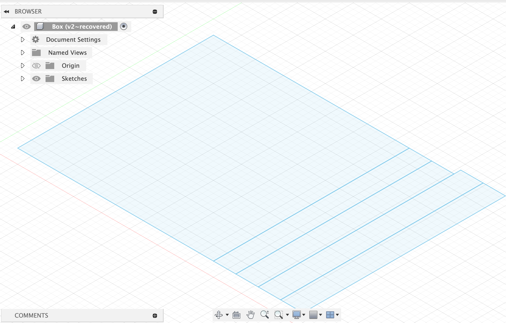
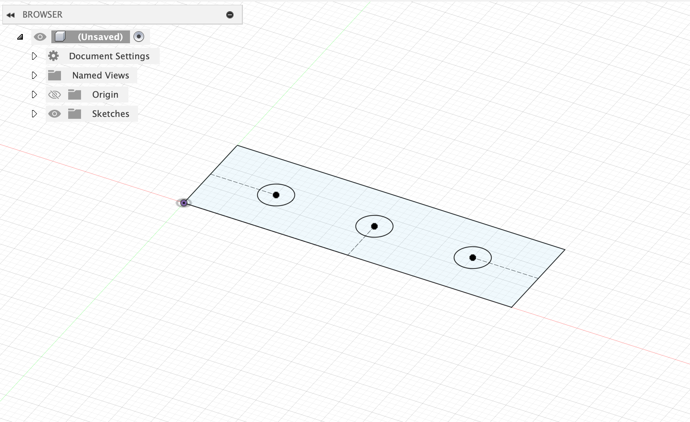

<div class="textcontainer">
<p class="margin"> </p>
<h3>Weeks 10-12: Machine Building</h3>
<p><br></p>
<div class="video-container">
<video controls muted>
<source src="machine.mp4" type="video/mp4">
Your browser does not support the video tag.
</video>
</div>
<p><br></p>
<h4>Assignment: Build a Drawing Robot</h4>
We're asked to make a drawing machines that has the ability to calibrate its motor position to a "home" position each time on startup, and have the precision to
draw a circle and mark its center point. We took an old design of a drawing machine left by a previous year to convert it for our use case!
<p></br></p>
We decided we wanted to make a sand-sculpture drawing. The whole machine is comprised of a black-metallic gantry with four wheels and two axels.
The machine moves in the x-direction by wheels on raised tracks.
The y-direction is moved by a conveyer belt, and on this belt sits a platform. The platform holds the end point.
The end point is a rake that can be lifted and dropped using a servo motor mechanism.
The entire machine is powered by a circuit that also sits on the edge of the gantry.
Both the wheels and the conveyer belt are powered by stepper motors and drivers.
The conveyer belt knows when to stop moving the platform towards the edges of the gantry when the platform runs into a switch.
<p><br></p>
<div class="img-container">
<img src="machine1.jpg">
</div>
<p><br></p>
<h4>Part 1: Hardware</h4>
We were provided the gantry, three stepper motors, conveyer belt, and wheels. The rest we made from scratch.
<o>
<li>First, we laser cut out a wood platform for us to screw on top of the conveyer belt mover (the part that interacts with the belt).</li>
<li>Second, we laser cut a three-holed rectangular piece of wood to hold our end-pointer, a rake. The middle hole is for a 5mm diameter rake. The two outer holes
are for 5mm diameter dowels. Do not secure the wood to the outer dowels, but do secure it to the rake. We used a metal circular clamp to 'pinch' the rake
to the wood, but you can also use hot glue or nuts (we could not find nuts to fit).</li>
<li>
Finally, we laser cut a square sand-box. The dimensions were 14 inches (approx. 355mm) on either side, with a thickness of 6mm and wall-height of 30mm.
Feel free to download the sand-box dxf file using the button below. Once it is laser cut on wood (set the thickness and z-axis cut correctly),
combine the pieces together either wood glue and/or hot glue.</li>
</o>
The sandbox and the rectangular three-holed wood are shown below. Feel free to grab their dxf files by clicking the button.
<p><br></p>
<div class="img-container">
<p></p>
<p></p>
</div>
<p><br></p>
<p class="margin"> </p>
<div class="flexrow">
<a id="btn" href="./week10.zip" download>Download dxf files
</a>
</div>
<h4>Part 2: Circuit and Code</h4>
The main circuit was given to us. It consists of three stepper drivers connected in series to an 8V outside power bank.
We also introduced two new circuits, one for a servo and one for a switch. These were both powered using 5V from an ESP32C3 microcontroller.
<p><br></p>
The main circuit is shown below:
<p><br></p>
<div class="img-container">
<img src="machine2.jpg">
</div>
<p><br></p>
The code that powers this circuit can be found here:
<p><br></p>
<div class="code-box">
<pre><code class="language-arduino">
#include AccelStepper.h
#include ESP32Servo.h
// Pin Definitions
#define dirPinLeft 9
#define stepPinLeft 8
#define dirPinRight 1
#define stepPinRight 0
#define dirPinCenter 6
#define stepPinCenter 7
#define motorInterfaceType 1
AccelStepper stepperLeft = AccelStepper(motorInterfaceType, stepPinLeft, dirPinLeft);
AccelStepper stepperRight = AccelStepper(motorInterfaceType, stepPinRight, dirPinRight);
AccelStepper stepperCenter = AccelStepper(motorInterfaceType, stepPinCenter, dirPinCenter);
int lidServoPin = 2; // the pin for the servo
int pushButton = 10; // the pin for the limit switch
// Variables
float angle_deg = 0.0;
float radius = 2000.0; // in steps — increase for bigger circle
float step_size_deg = 5.0; // smaller = smoother
int buttonState;
int numSteps = 100; // NOTE: can change, equals num of steps to move to middle
float originX = 2000;
float originY = 0;
// Class Servo Definition
class UselessServo {
Servo servo;
int pos;
int startPos;
int endPos;
int increment; // amount we move servo by at each increment
int updateInterval; // determine speed by which we move our servo
unsigned long lastUpdate; // counter to see how much time has passed
public:
UselessServo (int interval, int start, int target) {
// initialize class
updateInterval = interval;
startPos = start;
pos = startPos;
endPos = target;
increment = -10;
}
void Attach (int pin) {
// 'attach' or 'put' servo to its initial position
servo.attach(pin);
servo.write(startPos);
}
void toTarget() {
// GOES DOWN
// move servo incrementally to target end position
servo.write(endPos);
}
void Return() {
// GOES UP
// move servo incrementally to initial start position
servo.write(startPos);
}
bool isMoving() {
// if not moving, return 0, otherwise return 1
return !(pos == endPos || pos == startPos);
}
};
// Servo Object
UselessServo lidServo(15, 180, 90);
// Function: Calibrate
void calibrate() {
// TODO: decide which side switch is on, set stepperCenter HIGH or LOW accordingly
// until we've hit the switch, move one step
long accumX = 0;
while (true) {
buttonState = digitalRead(pushButton);
Serial.println(buttonState);
Serial.println(accumX);
accumX += 200;
stepperCenter.moveTo(accumX);
// Keep running the motors until they reach the position
while (stepperCenter.distanceToGo() != 0) {
stepperCenter.run();
}
if (buttonState == 1) {
stepperCenter.setSpeed(0);
break;
}
}
// The following moves from pushbutton to center
accumX = 0;
// now, move to center origin
stepperLeft.moveTo(originX);
stepperRight.moveTo(originX);
//stepperCenter.moveTo(originY);
Serial.println("GOING TO CENTER...");
// Keep running the motors until they reach the position
while (stepperLeft.distanceToGo() != 0) {
stepperLeft.run();
stepperRight.run();
}
}
// Function: Setup
void setup() {
// Set up Serial
Serial.begin(9600);
// Set speeds
stepperLeft.setMaxSpeed(6000);
stepperRight.setMaxSpeed(6000);
stepperCenter.setMaxSpeed(10000);
stepperLeft.setAcceleration(6000);
stepperRight.setAcceleration(6000);
stepperCenter.setAcceleration(6000);
pinMode(pushButton, INPUT_PULLUP);
lidServo.Attach(lidServoPin);
// when we wanna move it
lidServo.Return();
calibrate();
}
// Function: Loop
void loop() {
lidServo.toTarget();
if (angle_deg >= 360.0) {
angle_deg = 0; // reset to loop continuously
}
float angle_rad = angle_deg * PI / 180.0;
long x = radius * cos(angle_rad);
long y = 3 * radius * sin(angle_rad);
stepperLeft.moveTo(x);
stepperRight.moveTo(x);
stepperCenter.moveTo(y);
// Keep running the motors until they reach the position
while (stepperLeft.distanceToGo() != 0 || stepperCenter.distanceToGo() != 0) {
stepperLeft.run();
stepperRight.run();
stepperCenter.run();
}
angle_deg += step_size_deg;
}
</code></pre>
</div>
<p><br></p>
<h4>Part 3: Demo</h4>
Here is our 1 minute video! The circle with a centered dot is shown also as an image:
<p><br></p>
<div class="video-container">
<video controls muted>
<source src="machine.mp4" type="video/mp4">
Your browser does not support the video tag.
</video>
</div>
<p><br></p>
<div class="img-container">
<img src="machine3.jpg">
</div>
<p><br></p>
</div>